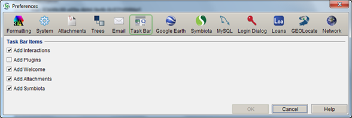

Task Bar Preferences
Task Bar Preferences
Add and/or remove tools from
the Specify task bar.
- For Mac: Choose Specify >
Preferences > Task Bar.
- For Windows and Linux: Choose Edit
> Preferences > Task Bar.

Task Bar Preference
- Add Interactions - Places an Interactions
button on the task bar which enables use of the Interactions
tools such as Accession, Permit, Loan, Gift, Exchange In,
Exchange Out, Borrow and Information Request. Users that are not
using these tools can remove the button from the task bar.
- Add Plugins - Places a Plugins button on the
task bar, which allows individual records or Record Sets to be
utilized when using the Plugin services. Google Earth and
GEOLocate are available on the Locality form and will remain
usable if the Plugins button is removed from the task bar.
(Uncheck Plugins if not using GoogleEarth or GEOLocate other
than in the Locality form.)
- Add Welcome - Allows the Welcome panel in Specify to be added to, or removed from the Task Bar.
- Add Attachments - Adds an Attachment button
to the task bar which enables attachment tools such as the
Attachment Browser, Import Attachments and Import Attachment
Index.
- Add Welcome - Adds a Welcome button to the
task bar which opens an abbreviated statistics page when
clicked.
- Add Symbiota - Adds a Symbiota button to the task bar which opens the Symbiota tool for automated sharing of data with a project in Symbiota.
- Add SGR - Adds the Scatter, Gather, Reconcile button to the task bar which allows the Scatter, Gather, Reconcile tool to be opened in the work space.